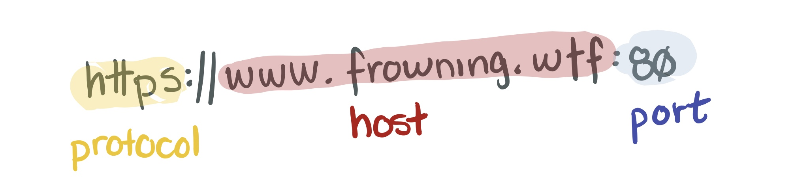

Token Up
Keeping Hands Out of the Cookie Jar
Erin Browning
$whoami
Senior Security Engineer
a.k.a., I'm a hacker
Slack is hiring!
Slack is used by millions of people every day – we need engineers who want to make that experience as secure and enjoyable as possible.
frowning.wtf URLs are fake.Please don't attack my website.

Content-Type header as a way to secure your API.Let's talk about why you'd care.


Lots of requests can't be made from URL1 to URL2 if they differ on the following things: 
- Protocol (e.g., HTTP vs HTTPS)
- Port
- Host
We care about CORS because of the protection offered by the Same Origin Policy (SOP).
There's an easier way than randomized tokens.
That token gets stored on the server as well.
When the form is submitted, the token is sent with the form data and validated on the server.
Content-Types:multipart/form-datatext/plainapplication/x-www-url-form-encodedapplication/jsonapplication/xml
Content-Type your API doesn't consume.
multipart/form-data, can go cross origintext/plain, can go cross originapplication/x-www-url-form-encoded, can go cross originapplication/json, can't go cross origin without CORSapplication/xml, can't go cross origin without CORS

www.frowning.wtf- contains your frontend + any monolith codewww.frowning.wtf/api- apiwww.frowning.wtf/admin- administrator site
api.frowning.wtfwww.frowning.wtfadmin.frowning.wtf